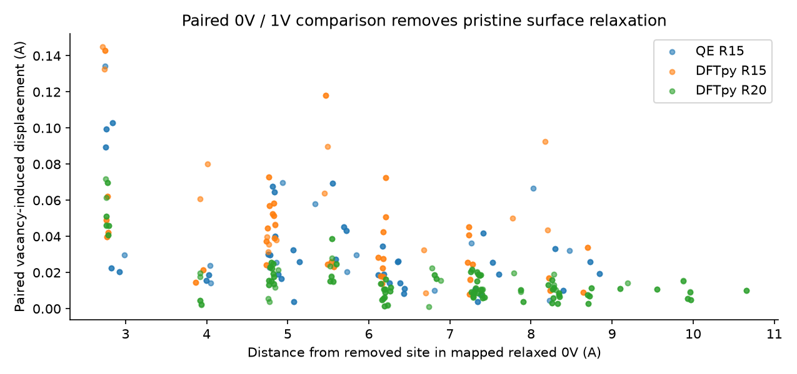

五態輸入已準備，117 項本機查核通過；尚未提交。
本頁沿用 10/3 16:40 的歸檔資料，沒有查詢新的作業狀態。
這份意見的主要方向可以採用：先看無空缺的柱子，再看空缺額外造成的變化，最後比較形成能。它們是三組互相對照的證據，還不是已證明的因果鏈。
| R15 指標 | QE | OF pilot |
|---|---|---|
| 單空缺形成能（eV） | 0.747118 | 0.598151 |
| 空缺造成的軸長變化 | +0.0759% | -0.1470% |
| 配對位移最大值（Å） | 0.1343 | 0.1450 |
| 配對位移 RMS（Å） | 0.04147 | 0.05252 |
位移以同尺寸、已鬆弛的無空缺柱為基準；扣掉均勻晶胞形變與共同平移。空缺引起的表面反應仍包含其中。原有 bulk「約兩倍最大位移」數字保留，但不能把它當成錯誤結合能的原因。

兩方法的 XC、偽勢、實際半徑不同；QE 柱子取樣與 OF stress 的驗證也未完成。因此，現在能說的是「能量和軸向反應都不同」，還不能說哪個機制已被證明。
保留 800 eV、PAW/PBE 與原門檻。三方向 PBC、全晶胞鬆弛；從各自舊終態出發。提案為每組 29 ranks／64 GiB、Slurm 72 小時，五組可並行。64 GiB 仍需實際記憶體查核。
可比較單空缺形成能、三種配對結合能、1NN−2NN 與 5NN−1NN；不能認證六配對完整排序。後續 k5 輸入須等新的 k4 終態通過驗收後生成。
完整協定 · 五態條件表 · 來源與 hashes · 117 項查核
The QE small-column pristine and single-vacancy endpoints pass the present relaxation acceptance criteria. Under the current protocols, the vacancy formation energies are 0.747 eV (QE) and 0.598 eV (OF pilot). Their axial responses have opposite signs: +0.076% and −0.147%, respectively.
Using atom-matched relaxed-pristine references, the maximum vacancy-associated displacements are 0.134 Å (QE) and 0.145 Å (OF). OF has approximately 27% higher RMS and 28% higher 95th-percentile displacement. This analysis removes the pristine baseline but retains vacancy-induced surface response. It does not overturn the separate bulk displacement measurements or establish a cause for the energy difference.
The old bulk QE pair ordering remains unvalidated: several binding energies change by more than 0.2 eV between k3 and k4 at fixed geometry. Five k4 variable-cell inputs (0V, 1V, 1NN, 2NN and 5NN) are prepared for review, with all existing results preserved. They have not been submitted. Any subsequent k5 checks must use the newly accepted k4 geometries.
Both the nanocolumn sampling and the OF stress pipeline still require validation. The methods also use different exchange-correlation functionals and pseudopotentials, and their topology-matched columns have slightly different physical radii. The present differences should therefore be reported as observations, without assigning a mechanism yet.